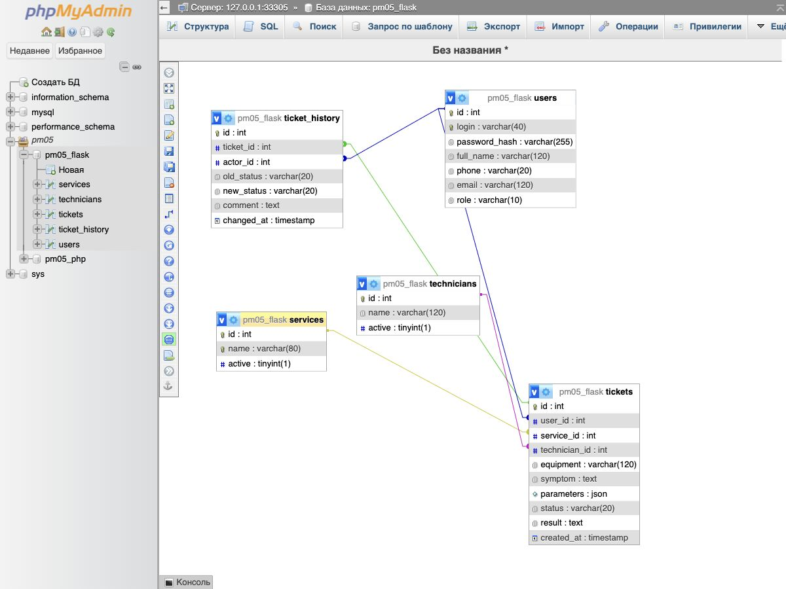
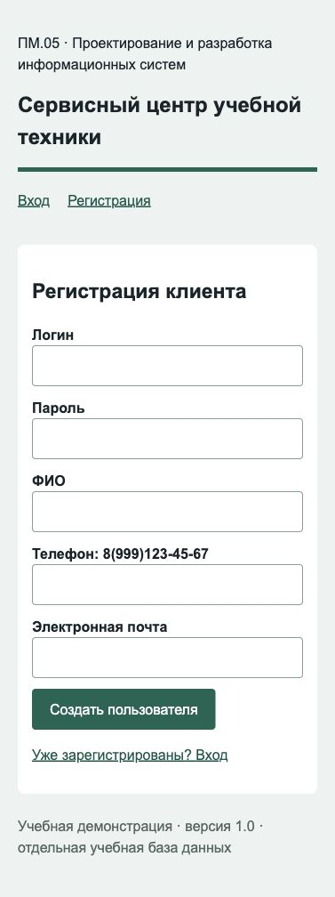
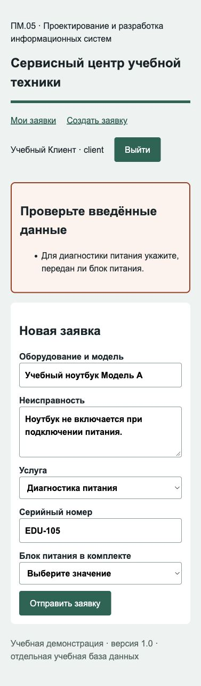
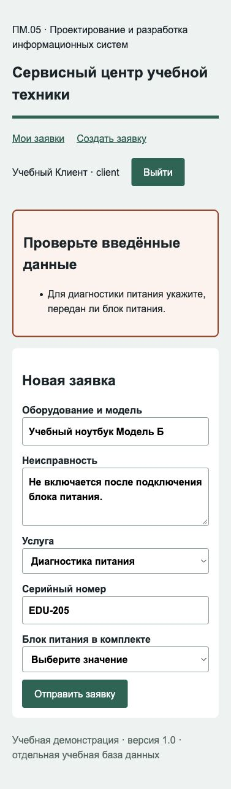
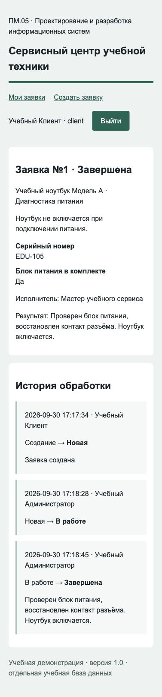
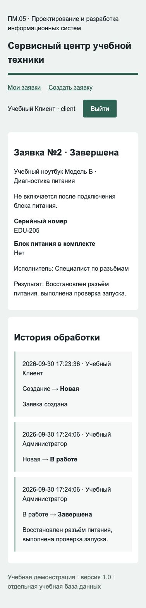

Сервисный центр учебной техники
Отдельная область для разбора: создание проекта и БД, регистрация, заявки, исполнители, история и проверки в Flask или PHP.
Учебный маршрут / 2026-2027
РВМП · 7 семестр · Сервисные заявки: данные, серверная логика и тестирование
Учебный комплектОтдельная область для разбора: создание проекта и БД, регистрация, заявки, исполнители, история и проверки в Flask или PHP.
Учебный сервис принимает ноутбуки на диагностику питания и ремонт разъёма. Пользователь указывает модель, симптом, услугу, серийный номер и сведения о блоке питания. Для диагностики питания сведения о комплектности обязательны; значение «Нет» является допустимым ответом. Администратор выбирает мастера, переводит заявку в работу и завершает её с результатом. Начните с этой области, затем создайте собственную по карточке варианта.
Для проверки используйте только вымышленные сведения: Учебный Клиент, client01, client@example.test, 8(999)123-45-67. Учебный пароль выберите длиной не менее 8 символов. Для демонстрации: оборудование «Учебный ноутбук Модель А», неисправность «Не включается при подключении питания», серийный номер EDU-105, услуга «Диагностика питания». Отправка без ответа о блоке питания должна показать ошибку и сохранить поля формы; с ответом «Да» или «Нет» создаётся заявка.
Браузер отправляет форму серверу. Сервер проверяет сессию, токен формы, поля и правила. Только после успешной проверки он записывает данные в БД. Шаблон отображает результат. ER-диаграмма показывает связи сущностей, а транзакция объединяет несколько SQL-операций в одно целое: все изменения сохраняются вместе либо откатываются. ООП используется в DomainPolicy: объект хранит описание области и проверяет её значения.
Исходный код сервисного центра, схема и демонстрационные записи разработаны для этой практики; готовый сервер ПМ.08 не используется. Связь с КИМ относится к навыкам задания 1. Код в блоках ниже взят из соответствующих файлов демонстрации, его нужно вводить постепенно в указанные места.
Открыть базовый образец ДЭ 2027 по разработке приложения — Сопоставьте проектирование БД, регистрацию, авторизацию и обработку заявок с заданием 1. Сервисная область и проверки этой практики являются авторской адаптацией.
Скачать демонстрационный сервисный центр для сверки (Flask и PHP, ZIP) — Откройте после самостоятельной сборки демонстрации. Архив содержит код, схему БД, описание конфигурации и инструкцию запуска; это пример другой области, а не готовый индивидуальный вариант.
Для Flask нужны установленный Python 3.11 или новее, Flask 3.1.3 и PyMySQL 1.2.0. Для PHP проверенная среда — PHP 8.2.4 с PDO MySQL, mbstring и JSON; допустима установленная совместимая PHP 8.2+. Обе ветки работают с MySQL или MariaDB и phpMyAdmin. В проверенной демонстрации использованы MySQL 9.6.0 и phpMyAdmin 5.2.1. Не требуется переносить на свой компьютер нестандартные порты проверочной среды: используйте значения своего учебного сервера.
В Проводнике создайте папку service-center. В VS Code нажмите «Файл → Открыть папку» и выберите её. В левой панели «Проводник» нажмите «Новая папка» и создайте flask, внутри неё templates и static. Для второй ветки создайте php. Общие schema.sql и domain.json располагаются в service-center рядом с этими папками. Правой кнопкой на нужной папке → «Создать файл» создаёт файл именно в ней. Расширения имён оставьте видимыми; schema.sql.txt и app.py.txt не подходят. Код сохраняйте в UTF-8 через Ctrl+S. На Mac вместо Ctrl используется Command для сохранения.
В VS Code выберите «Терминал → Новый терминал». Команда pwd или Get-Location показывает текущую папку. Для Flask перейдите командой cd flask. В PowerShell выполните py -3 --version, затем py -3 -m venv .venv. Команды далее можно запускать напрямую: .\.venv\Scripts\python.exe. В macOS/Linux: python3 -m venv .venv, затем .venv/bin/python. Это отдельное окружение зависимостей проекта. Для PHP окружение Python не требуется.
После ввода requirements.txt установите зависимости в окружение проекта: .\.venv\Scripts\python.exe -m pip install -r requirements.txt. В macOS/Linux: .venv/bin/python -m pip install -r requirements.txt. Если учебная среда работает без сети, используйте заранее предоставленный преподавателем каталог wheel: добавьте --no-index --find-links ПУТЬ_К_WHEEL. Не продолжайте при сообщении ModuleNotFoundError; сначала проверьте, тот ли интерпретатор используется. Для PHP откройте XAMPP Control Panel, запустите Apache и MySQL кнопками Start, откройте http://localhost/phpmyadmin. Команда php -m должна содержать pdo_mysql и mbstring. Если php не найден, используйте установленный путь C:\xampp\php\php.exe.
Фраза «клиент создаёт заявку» даёт users и tickets; «выбирает услугу» — services; «назначается исполнитель» — technicians; «сохраняется история» — ticket_history. У каждой таблицы есть числовой первичный ключ id. Логин уникален, пароль хранится как хеш. В заявке сохраняются ссылки user_id, service_id, technician_id, а не копии имён. История хранит ticket_id и actor_id, старый/новый статусы и комментарий.
INT подходит для идентификатора; VARCHAR — для ограниченной строки; TEXT — для развёрнутого описания; TIMESTAMP — для момента события. JSON хранит небольшие параметры изделия; поля, используемые в связях или регулярном поиске, следует выделять в отдельные типизированные столбцы. В демонстрации JSON позволяет менять предметные поля без переписывания общей заявки. Один клиент имеет много заявок; одна заявка — много событий. technician_id допускает NULL, поскольку новая заявка ещё не назначена.
В phpMyAdmin слева нажмите «Создать БД». Укажите pm05_flask для Flask или pm05_php для PHP. Выберите utf8mb4_unicode_ci и нажмите «Создать». Не выбирайте пользовательскую или чужую базу. Слева откройте новую БД, затем вкладку SQL. После каждой законченной команды CREATE TABLE из следующего раздела нажмите «Вперёд» и проверьте новую таблицу через «Структура». Для двух веток нужны две БД: форматы хешей их паролей различаются.
После всех таблиц откройте БД → «Ещё» → «Дизайнер». Перетащите заголовки таблиц так, чтобы они не перекрывались. Проверьте пять связей: tickets.user_id → users.id, tickets.service_id → services.id, tickets.technician_id → technicians.id, ticket_history.ticket_id → tickets.id, ticket_history.actor_id → users.id. Сохраните изображение диаграммы в папку проекта. Если связь не видна, откройте таблицу → «Структура» → «Представление отношений» и проверьте внешний ключ, тип INT и InnoDB. Не рисуйте линию, которую БД фактически не поддерживает.

Создайте новый пустой файл schema.sql в структуре service-center. Источник: авторский демонстрационный файл demo/schema.sql из архива практики. Введите строки ниже в указанном порядке. Идентификатор, уникальный логин, хеш пароля и контакты. UNIQUE защищает от повторного логина даже при одновременной регистрации. CHECK ограничивает роли.
CREATE TABLE users (
id INT PRIMARY KEY AUTO_INCREMENT,
login VARCHAR(40) NOT NULL UNIQUE,
password_hash VARCHAR(255) NOT NULL,
full_name VARCHAR(120) NOT NULL,
phone VARCHAR(20) NOT NULL,
email VARCHAR(120) NOT NULL,
role VARCHAR(10) NOT NULL DEFAULT 'client',
CHECK (role IN ('client','admin'))
) ENGINE=InnoDB;
Выполните эту законченную SQL-команду на вкладке SQL и проверьте Структура. Если обнаружена ошибка, сравните участок с этим блоком; исправьте причину и повторите ту же проверку. Не переходите к новой функции при ошибке текущей.
Вставьте продолжение в конец файла после предыдущей законченной порции schema.sql в структуре service-center. Источник: авторский демонстрационный файл demo/schema.sql из архива практики. Введите строки ниже в указанном порядке. Отдельный справочник с active. Отключённая услуга сохраняется для истории, но не предлагается в новых заявках.
CREATE TABLE services ( id INT PRIMARY KEY AUTO_INCREMENT, name VARCHAR(80) NOT NULL UNIQUE, active BOOLEAN NOT NULL DEFAULT TRUE ) ENGINE=InnoDB;
Выполните эту законченную SQL-команду на вкладке SQL и проверьте Структура. Если обнаружена ошибка, сравните участок с этим блоком; исправьте причину и повторите ту же проверку. Не переходите к новой функции при ошибке текущей.
Вставьте продолжение в конец файла после предыдущей законченной порции schema.sql в структуре service-center. Источник: авторский демонстрационный файл demo/schema.sql из архива практики. Введите строки ниже в указанном порядке. Справочник исполнителей. Флаг активности позволяет не удалять мастера, чьё имя связано с прежними заявками.
CREATE TABLE technicians ( id INT PRIMARY KEY AUTO_INCREMENT, name VARCHAR(120) NOT NULL, active BOOLEAN NOT NULL DEFAULT TRUE ) ENGINE=InnoDB;
Выполните эту законченную SQL-команду на вкладке SQL и проверьте Структура. Если обнаружена ошибка, сравните участок с этим блоком; исправьте причину и повторите ту же проверку. Не переходите к новой функции при ошибке текущей.
Вставьте продолжение в конец файла после предыдущей законченной порции schema.sql в структуре service-center. Источник: авторский демонстрационный файл demo/schema.sql из архива практики. Введите строки ниже в указанном порядке. Внешние ключи запрещают ссылки на отсутствующие записи. Значение статуса по умолчанию — Новая; результат изначально пустой. NULL для исполнителя допустим до принятия в работу.
CREATE TABLE tickets (
id INT PRIMARY KEY AUTO_INCREMENT,
user_id INT NOT NULL,
service_id INT NOT NULL,
technician_id INT NULL,
equipment VARCHAR(120) NOT NULL,
symptom TEXT NOT NULL,
parameters JSON NOT NULL,
status VARCHAR(20) NOT NULL DEFAULT 'Новая',
result TEXT NOT NULL,
created_at TIMESTAMP NOT NULL DEFAULT CURRENT_TIMESTAMP,
FOREIGN KEY (user_id) REFERENCES users(id),
FOREIGN KEY (service_id) REFERENCES services(id),
FOREIGN KEY (technician_id) REFERENCES technicians(id),
CHECK (status IN ('Новая','В работе','Завершена'))
) ENGINE=InnoDB;
Выполните эту законченную SQL-команду на вкладке SQL и проверьте Структура. Если обнаружена ошибка, сравните участок с этим блоком; исправьте причину и повторите ту же проверку. Не переходите к новой функции при ошибке текущей.
Вставьте продолжение в конец файла после предыдущей законченной порции schema.sql в структуре service-center. Источник: авторский демонстрационный файл demo/schema.sql из архива практики. Введите строки ниже в указанном порядке. Событие связано с заявкой и автором. При создании старого статуса нет. Не удаляйте события при фильтрации или просмотре.
CREATE TABLE ticket_history ( id INT PRIMARY KEY AUTO_INCREMENT, ticket_id INT NOT NULL, actor_id INT NOT NULL, old_status VARCHAR(20) NULL, new_status VARCHAR(20) NOT NULL, comment TEXT NOT NULL, changed_at TIMESTAMP NOT NULL DEFAULT CURRENT_TIMESTAMP, FOREIGN KEY (ticket_id) REFERENCES tickets(id), FOREIGN KEY (actor_id) REFERENCES users(id) ) ENGINE=InnoDB;
Выполните эту законченную SQL-команду на вкладке SQL и проверьте Структура. Если обнаружена ошибка, сравните участок с этим блоком; исправьте причину и повторите ту же проверку. Не переходите к новой функции при ошибке текущей.
Вставьте продолжение в конец файла после предыдущей законченной порции schema.sql в структуре service-center. Источник: авторский демонстрационный файл demo/schema.sql из архива практики. Введите строки ниже в указанном порядке. Создаются две услуги и два вымышленных исполнителя. Пользователи добавляются приложением, чтобы пароль сразу был корректно хеширован.
INSERT INTO services(name) VALUES ('Диагностика питания'),('Ремонт разъёма');
INSERT INTO technicians(name) VALUES ('Мастер учебного сервиса'),('Специалист по разъёмам');Выполните эту законченную SQL-команду на вкладке SQL и проверьте Структура. Если обнаружена ошибка, сравните участок с этим блоком; исправьте причину и повторите ту же проверку. Не переходите к новой функции при ошибке текущей.
Создайте новый пустой файл domain.json в структуре service-center. Источник: авторский демонстрационный файл demo/domain.json из архива практики. Введите строки ниже в указанном порядке. fields описывает имя, подпись, тип и допустимые значения. Правило when проверяет название услуги, require требует ответ о блоке питания. «Нет» — заполненное значение. Вводите этот JSON в файл рядом с flask и php; обе ветки читают один формат.
{
"title": "Сервисный центр учебной техники",
"fields": [
{"name": "serial", "label": "Серийный номер", "type": "text", "required": true, "pattern": "^[A-Za-z0-9-]{3,30}$"},
{"name": "adapter", "label": "Блок питания в комплекте", "type": "select", "choices": ["Да", "Нет"]}
],
"rules": [
{"when": {"field": "service", "equals": "Диагностика питания"}, "require": "adapter", "message": "Для диагностики питания укажите, передан ли блок питания."}
]
}Сохраните файл в указанном каталоге. При ошибке формата JSON проверьте двойные кавычки, запятые и парные скобки. Если обнаружена ошибка, сравните участок с этим блоком; исправьте причину и повторите ту же проверку. Не переходите к новой функции при ошибке текущей.
В phpMyAdmin откройте services → Обзор: должны быть две услуги. technicians → Обзор: два исполнителя. Откройте tickets → Структура → Представление отношений и проверьте три внешних ключа. Выполните SELECT COUNT(*) FROM users; перед регистрацией число равно нулю. Попытка вставки заявки с отсутствующим user_id должна быть отвергнута БД; не отключайте проверку внешних ключей.
В терминале из service-center выполните python -m json.tool domain.json. Команда должна вывести корректно отформатированный JSON без ошибки. fields содержит serial и adapter, rules — условную обязательность adapter. Если нет Python в PHP-ветке, JSON проверится при загрузке index.php; используйте двойные кавычки и проверяйте текст ошибки JSON_THROW_ON_ERROR.
Создайте новый пустой файл flask/requirements.txt в структуре service-center. Источник: авторский демонстрационный файл demo/flask/requirements.txt из архива практики. Введите строки ниже в указанном порядке. Это перечень библиотек приложения. Flask обрабатывает HTTP и шаблоны, PyMySQL подключается к MySQL/MariaDB. Установите их в окружение проекта командой из подготовки среды.
Flask==3.1.3 PyMySQL==1.2.0
Сохраните файл и проверьте его имя и каталог. Если обнаружена ошибка, сравните участок с этим блоком; исправьте причину и повторите ту же проверку. Не переходите к новой функции при ошибке текущей.
Создайте новый пустой файл flask/db.py в структуре service-center. Источник: авторский демонстрационный файл demo/flask/db.py из архива практики. Введите строки ниже в указанном порядке. os читает конфигурацию из переменных окружения; pymysql реализует подключение; contextmanager превращает функцию в управляемый контекст.
import os import pymysql from contextlib import contextmanager
Сохраните файл. Для Python-модуля проверьте синтаксис командой python -m py_compile ИМЯ_ФАЙЛА, для PHP — php -l ИМЯ_ФАЙЛА; используйте интерпретатор своего проекта. Если обнаружена ошибка, сравните участок с этим блоком; исправьте причину и повторите ту же проверку. Не переходите к новой функции при ошибке текущей.
Вставьте продолжение в конец файла после предыдущей законченной порции flask/db.py в структуре service-center. Источник: авторский демонстрационный файл demo/flask/db.py из архива практики. Введите строки ниже в указанном порядке. Блок with открывает соединение, после успешного выхода фиксирует транзакцию. Исключение вызывает rollback, finally всегда закрывает соединение. DictCursor возвращает именованные поля вместо позиционных кортежей.
@contextmanager
def database():
connection = pymysql.connect(
host=os.environ.get('DB_HOST', '127.0.0.1'),
port=int(os.environ.get('DB_PORT', '3306')),
user=os.environ.get('DB_USER', 'root'),
password=os.environ.get('DB_PASSWORD', ''),
database=os.environ.get('DB_NAME', 'pm05_flask'),
charset='utf8mb4', cursorclass=pymysql.cursors.DictCursor,
)
try:
yield connection
connection.commit()
except Exception:
connection.rollback()
raise
finally:
connection.close()
Сохраните файл. Для Python-модуля проверьте синтаксис командой python -m py_compile ИМЯ_ФАЙЛА, для PHP — php -l ИМЯ_ФАЙЛА; используйте интерпретатор своего проекта. Если обнаружена ошибка, сравните участок с этим блоком; исправьте причину и повторите ту же проверку. Не переходите к новой функции при ошибке текущей.
Вставьте продолжение в конец файла после предыдущей законченной порции flask/db.py в структуре service-center. Источник: авторский демонстрационный файл demo/flask/db.py из архива практики. Введите строки ниже в указанном порядке. rows выполняет параметризованный запрос и возвращает список словарей. Значения передаются отдельно через args. Не подставляйте введённый пользователем текст в SQL через f-строки.
def rows(sql, args=()):
with database() as connection:
with connection.cursor() as cursor:
cursor.execute(sql, args)
return cursor.fetchall()Сохраните файл. Для Python-модуля проверьте синтаксис командой python -m py_compile ИМЯ_ФАЙЛА, для PHP — php -l ИМЯ_ФАЙЛА; используйте интерпретатор своего проекта. Если обнаружена ошибка, сравните участок с этим блоком; исправьте причину и повторите ту же проверку. Не переходите к новой функции при ошибке текущей.
Создайте новый пустой файл flask/rules.py в структуре service-center. Источник: авторский демонстрационный файл demo/flask/rules.py из архива практики. Введите строки ниже в указанном порядке. math.isfinite отвергает бесконечные числовые значения. re обеспечивает проверку формата целой строки.
import math import re
Сохраните файл. Для Python-модуля проверьте синтаксис командой python -m py_compile ИМЯ_ФАЙЛА, для PHP — php -l ИМЯ_ФАЙЛА; используйте интерпретатор своего проекта. Если обнаружена ошибка, сравните участок с этим блоком; исправьте причину и повторите ту же проверку. Не переходите к новой функции при ошибке текущей.
Вставьте продолжение в конец файла после предыдущей законченной порции flask/rules.py в структуре service-center. Источник: авторский демонстрационный файл demo/flask/rules.py из архива практики. Введите строки ниже в указанном порядке. Сначала проверяется каждое поле: обязательность, длина, перечисление, формат или диапазон числа. Затем выполняются условные правила. Ошибки собираются в список, поэтому пользователь может исправить несколько полей за один раз. Пустое необязательное поле пропускается; условное правило может потребовать его отдельно.
def validate_details(domain, values):
errors = []
for field in domain['fields']:
value = values.get(field['name'], '').strip()
if not value:
if field.get('required'):
errors.append(f"Заполните поле «{field['label']}».")
continue
if len(value) > 120:
errors.append(f"Поле «{field['label']}» слишком длинное.")
if field['type'] == 'select' and value not in field['choices']:
errors.append(f"Выберите допустимое значение «{field['label']}».")
if field.get('pattern') and not re.fullmatch(field['pattern'], value):
errors.append(f"Проверьте формат «{field['label']}».")
if field['type'] in ('number', 'integer'):
try:
number = float(value)
valid = math.isfinite(number)
valid &= field['type'] != 'integer' or number.is_integer()
valid &= number >= field.get('min', 0)
valid &= number <= field.get('max', 100000)
if not valid:
raise ValueError()
except ValueError:
errors.append(f"Проверьте число «{field['label']}».")
for rule in domain.get('rules', []):
condition = rule['when']
if values.get(condition['field']) == condition['equals']:
if rule.get('require') and not values.get(rule['require'], '').strip():
errors.append(rule['message'])
if rule.get('expect'):
expected = rule['expect']
if values.get(expected['field']) != expected['equals']:
errors.append(rule['message'])
return errors
Сохраните файл. Для Python-модуля проверьте синтаксис командой python -m py_compile ИМЯ_ФАЙЛА, для PHP — php -l ИМЯ_ФАЙЛА; используйте интерпретатор своего проекта. Если обнаружена ошибка, сравните участок с этим блоком; исправьте причину и повторите ту же проверку. Не переходите к новой функции при ошибке текущей.
Вставьте продолжение в конец файла после предыдущей законченной порции flask/rules.py в структуре service-center. Источник: авторский демонстрационный файл demo/flask/rules.py из архива практики. Введите строки ниже в указанном порядке. Логин содержит латиницу и цифры, ФИО — кириллицу и пробелы; формат телефона фиксирован. Пароль ограничен по байтам UTF-8, чтобы длинные строки не усекались при хешировании в PHP. Проверка происходит на сервере, а не только через required в HTML.
def validate_registration(values):
errors = []
if not re.fullmatch(r'[A-Za-z0-9]{6,40}', values.get('login', '')):
errors.append('Логин: от 6 до 40 латинских букв и цифр.')
if not 8 <= len(values.get('password', '')) or len(values.get('password', '').encode('utf-8')) > 64:
errors.append('Пароль: от 8 символов, не более 64 байт UTF-8.')
if not re.fullmatch(r'[А-Яа-яЁё ]{3,120}', values.get('full_name', '')):
errors.append('ФИО: кириллица и пробелы.')
if not re.fullmatch(r'8\(\d{3}\)\d{3}-\d{2}-\d{2}', values.get('phone', '')):
errors.append('Телефон: 8(999)123-45-67.')
if not re.fullmatch(r'[^\s@]+@[^\s@]+\.[^\s@]+', values.get('email', '')) or len(values.get('email','')) > 120:
errors.append('Введите корректную электронную почту.')
return errors
Сохраните файл. Для Python-модуля проверьте синтаксис командой python -m py_compile ИМЯ_ФАЙЛА, для PHP — php -l ИМЯ_ФАЙЛА; используйте интерпретатор своего проекта. Если обнаружена ошибка, сравните участок с этим блоком; исправьте причину и повторите ту же проверку. Не переходите к новой функции при ошибке текущей.
Вставьте продолжение в конец файла после предыдущей законченной порции flask/rules.py в структуре service-center. Источник: авторский демонстрационный файл demo/flask/rules.py из архива практики. Введите строки ниже в указанном порядке. Экземпляр хранит конфигурацию своей области и предоставляет метод validate. Серверу достаточно вызвать метод, не зная подробностей выбранных полей. Такой объект отделяет правила предметной области от HTTP-маршрутов.
class DomainPolicy:
def __init__(self, domain):
self.domain = domain
def validate(self, values):
return validate_details(self.domain, values)Сохраните файл. Для Python-модуля проверьте синтаксис командой python -m py_compile ИМЯ_ФАЙЛА, для PHP — php -l ИМЯ_ФАЙЛА; используйте интерпретатор своего проекта. Если обнаружена ошибка, сравните участок с этим блоком; исправьте причину и повторите ту же проверку. Не переходите к новой функции при ошибке текущей.
Из папки flask откройте интерактивный Python командой интерпретатора окружения. Введите: from rules import DomainPolicy; import json; from pathlib import Path. Создайте p = DomainPolicy(json.loads(Path("../domain.json").read_text(encoding="utf-8"))). Вызов p.validate({"serial":"EDU-105","adapter":"Да","service":"Диагностика питания"}) возвращает []. Повторите с adapter равным пустой строке: возвращается сообщение о комплектности. Введите exit() для выхода. Это проверяет причину отказа отдельно от HTML и БД.
Создайте новый пустой файл flask/static/style.css в структуре service-center. Источник: авторский демонстрационный файл demo/flask/static/style.css из архива практики. Введите строки ниже в указанном порядке. CSS задаёт читаемый рабочий интерфейс, состояния ошибок и фокус. Это оформление демонстрации; индивидуальная работа ПМ.05 оценивается по функциональности и данным. Сохраните файл в static, а не рядом с app.py.
:root{font-family:Arial,sans-serif;color:#18252a;background:#edf2f1;line-height:1.5}
*{box-sizing:border-box}main{max-width:1000px;margin:auto;padding:28px}
header{border-bottom:5px solid #136653}h1{font-size:30px}h2{font-size:23px}
nav{display:flex;gap:20px;flex-wrap:wrap;align-items:center;padding:20px 0}
a{color:#095749}section{background:white;padding:25px;margin:18px 0;border-radius:8px}
form{max-width:620px}nav form{margin:0}label{display:block;font-weight:bold;margin:12px 0}
input,select,textarea{display:block;width:100%;font:inherit;padding:10px;border:1px solid #889e97;border-radius:4px}
textarea{min-height:95px}button{background:#136653;color:white;border:0;border-radius:4px;padding:11px 20px;font:inherit;cursor:pointer}
button:focus-visible,a:focus-visible{outline:3px solid #d79117;outline-offset:3px}
article{border-left:4px solid #a5c5b9;padding:4px 18px;margin:14px 0;background:#f4f8f6}
.error{background:#fff3ed;border:2px solid #a5361a}dt{font-weight:bold}dd{margin-left:0;margin-bottom:10px}
footer{color:#536760;margin:24px 0}@media(max-width:600px){main{padding:12px}section{padding:16px}h1{font-size:24px}}Сохраните файл и проверьте его имя и каталог. Если обнаружена ошибка, сравните участок с этим блоком; исправьте причину и повторите ту же проверку. Не переходите к новой функции при ошибке текущей.
Создайте новый пустой файл flask/templates/page.html в структуре service-center. Источник: авторский демонстрационный файл demo/flask/templates/page.html из архива практики. Введите строки ниже в указанном порядке. Создайте templates/page.html. Верхняя часть подключает стиль и отображает навигацию в зависимости от роли. POST-форма выхода содержит токен csrf. Jinja автоматически экранирует выводимые значения.
<!doctype html>
<html lang="ru">
<head>
<meta charset="utf-8"><meta name="viewport" content="width=device-width,initial-scale=1">
<title>{{ domain.title }} — ПМ.05</title>
<link rel="stylesheet" href="{{ url_for('static',filename='style.css') }}">
</head>
<body><main>
<header><p>ПМ.05 · Проектирование и разработка информационных систем</p><h1>{{ domain.title }}</h1></header>
<nav>
{% if user %}
<a href="/">{{ 'Очередь заявок' if user.role == 'admin' else 'Мои заявки' }}</a>
<a href="/new">Создать заявку</a><span>{{ user.full_name }} · {{ user.role }}</span>
<form action="/logout" method="post"><input type="hidden" name="csrf" value="{{ session.csrf }}"><button>Выйти</button></form>
{% else %}<a href="/login">Вход</a><a href="/register">Регистрация</a>{% endif %}
</nav>
{% if errors %}<section class="error" role="alert"><h2>Проверьте введённые данные</h2><ul>{% for error in errors %}<li>{{ error }}</li>{% endfor %}</ul></section>{% endif %}Сохраните файл. Не запускайте незавершённую HTML/Jinja/PHP-разметку: сначала закончите весь шаблон, включая закрывающие конструкции. Если обнаружена ошибка, сравните участок с этим блоком; исправьте причину и повторите ту же проверку. Не переходите к новой функции при ошибке текущей.
Вставьте продолжение в конец файла после предыдущей законченной порции flask/templates/page.html в структуре service-center. Источник: авторский демонстрационный файл demo/flask/templates/page.html из архива практики. Введите строки ниже в указанном порядке. Макрос input уменьшает дублирование разметки. После ошибки он возвращает введённые данные, но никогда не возвращает пароль в value.
{% macro input(name,label,type='text') %}
<label>{{ label }}<input name="{{ name }}" type="{{ type }}" value="{{ '' if type == 'password' else values.get(name,'') }}" required></label>
{% endmacro %}Сохраните файл. Не запускайте незавершённую HTML/Jinja/PHP-разметку: сначала закончите весь шаблон, включая закрывающие конструкции. Если обнаружена ошибка, сравните участок с этим блоком; исправьте причину и повторите ту же проверку. Не переходите к новой функции при ошибке текущей.
Вставьте продолжение в конец файла после предыдущей законченной порции flask/templates/page.html в структуре service-center. Источник: авторский демонстрационный файл demo/flask/templates/page.html из архива практики. Введите строки ниже в указанном порядке. Форма содержит скрытый токен, логин, пароль и дополнительные поля регистрации. Имена name совпадают с ключами request.form. Метод POST передаёт данные для изменения состояния.
{% if page in ['login','register'] %}
<section><h2>{{ 'Регистрация клиента' if page == 'register' else 'Вход в систему' }}</h2>
<form method="post"><input type="hidden" name="csrf" value="{{ session.csrf }}">
{{ input('login','Логин') }}{{ input('password','Пароль','password') }}
{% if page == 'register' %}{{ input('full_name','ФИО') }}{{ input('phone','Телефон: 8(999)123-45-67') }}{{ input('email','Электронная почта','email') }}{% endif %}
<button>{{ 'Создать пользователя' if page == 'register' else 'Войти' }}</button></form>
<p><a href="{{ '/login' if page == 'register' else '/register' }}">{{ 'Уже зарегистрированы? Вход' if page == 'register' else 'Ещё не зарегистрированы? Регистрация' }}</a></p></section>Сохраните файл. Не запускайте незавершённую HTML/Jinja/PHP-разметку: сначала закончите весь шаблон, включая закрывающие конструкции. Если обнаружена ошибка, сравните участок с этим блоком; исправьте причину и повторите ту же проверку. Не переходите к новой функции при ошибке текущей.
Вставьте продолжение в конец файла после предыдущей законченной порции flask/templates/page.html в структуре service-center. Источник: авторский демонстрационный файл demo/flask/templates/page.html из архива практики. Введите строки ниже в указанном порядке. Услуги поступают из активного справочника. Предметные поля строятся из domain.fields. Приведение id к строке нужно для сравнения с HTML-значением. Ошибочные значения остаются в форме.
{% elif page == 'new' %}
<section><h2>Новая заявка</h2><form method="post"><input type="hidden" name="csrf" value="{{ session.csrf }}">
{{ input('equipment','Оборудование и модель') }}
<label>Неисправность<textarea name="symptom" required>{{ values.get('symptom','') }}</textarea></label>
<label>Услуга<select name="service_id" required><option value="">Выберите услугу</option>{% for s in services %}<option value="{{ s.id }}" {% if values.get('service_id') == s.id|string %}selected{% endif %}>{{ s.name }}</option>{% endfor %}</select></label>
{% for f in domain.fields %}<label>{{ f.label }}
{% if f.type == 'select' %}<select name="{{ f.name }}"><option value="">Выберите значение</option>{% for choice in f.choices %}<option {% if values.get(f.name) == choice %}selected{% endif %}>{{ choice }}</option>{% endfor %}</select>
{% else %}<input name="{{ f.name }}" value="{{ values.get(f.name,'') }}" type="{{ 'number' if f.type in ['number','integer'] else 'text' }}" step="{{ '1' if f.type == 'integer' else 'any' }}">{% endif %}</label>{% endfor %}
<button>Отправить заявку</button></form></section>Сохраните файл. Не запускайте незавершённую HTML/Jinja/PHP-разметку: сначала закончите весь шаблон, включая закрывающие конструкции. Если обнаружена ошибка, сравните участок с этим блоком; исправьте причину и повторите ту же проверку. Не переходите к новой функции при ошибке текущей.
Вставьте продолжение в конец файла после предыдущей законченной порции flask/templates/page.html в структуре service-center. Источник: авторский демонстрационный файл demo/flask/templates/page.html из архива практики. Введите строки ниже в указанном порядке. GET-фильтр не изменяет данные. Сервер передаёт только разрешённые заявки, а шаблон отображает карточки. Ветка else цикла объясняет пустой результат.
{% elif page == 'list' %}
<section><h2>{{ 'Очередь заявок' if user.role == 'admin' else 'Мои заявки' }}</h2>
<form method="get"><label>Статус<select name="status"><option value="">Все</option>{% for s in ['Новая','В работе','Завершена'] %}<option {% if status == s %}selected{% endif %}>{{ s }}</option>{% endfor %}</select></label><button>Применить фильтр</button></form>
{% for t in tickets %}<article><h3><a href="/ticket/{{ t.id }}">Заявка №{{ t.id }} · {{ t.equipment }}</a></h3><p>{{ t.service }} · <strong>{{ t.status }}</strong></p><p>Клиент: {{ t.full_name }} · Исполнитель: {{ t.technician or 'Не назначен' }}</p></article>{% else %}<p>Заявок по выбранным условиям нет.</p>{% endfor %}</section>Сохраните файл. Не запускайте незавершённую HTML/Jinja/PHP-разметку: сначала закончите весь шаблон, включая закрывающие конструкции. Если обнаружена ошибка, сравните участок с этим блоком; исправьте причину и повторите ту же проверку. Не переходите к новой функции при ошибке текущей.
Вставьте продолжение в конец файла после предыдущей законченной порции flask/templates/page.html в структуре service-center. Источник: авторский демонстрационный файл demo/flask/templates/page.html из архива практики. Введите строки ниже в указанном порядке. Поля и результат отображаются всем разрешённым пользователям. Административная форма появляется только для admin и незавершённой заявки. Скрытый target не является защитой: сервер повторно проверяет роль и переход. Завершите оставшиеся endif и закрывающие HTML-теги, прежде чем открывать страницу.
{% elif page == 'detail' %}
<section><h2>Заявка №{{ ticket.id }} · {{ ticket.status }}</h2><p>{{ ticket.equipment }} · {{ ticket.service }}</p><p>{{ ticket.symptom }}</p>
<dl>{% for f in domain.fields %}<dt>{{ f.label }}</dt><dd>{{ details.get(f.name) or 'Не указано' }}</dd>{% endfor %}</dl>
<p>Исполнитель: {{ ticket.technician or 'Не назначен' }}</p><p>Результат: {{ ticket.result or 'Работа ещё не завершена' }}</p>
{% if user.role == 'admin' and ticket.status != 'Завершена' %}
<form method="post"><input type="hidden" name="csrf" value="{{ session.csrf }}">
<label>Исполнитель<select name="technician_id"><option value="">Назначьте исполнителя</option>{% for n in technicians %}<option value="{{ n.id }}" {% if ticket.technician_id == n.id %}selected{% endif %}>{{ n.name }}</option>{% endfor %}</select></label>
<input type="hidden" name="status" value="{{ 'В работе' if ticket.status == 'Новая' else 'Завершена' }}">
<label>Описание результата<textarea name="result">{{ values.get('result',ticket.result) }}</textarea></label>
<button>{{ 'Принять в работу' if ticket.status == 'Новая' else 'Завершить заявку' }}</button></form>{% endif %}</section>
<section><h2>История обработки</h2>{% for h in history %}<article><p>{{ h.changed_at }} · {{ h.full_name }}</p><p>{{ h.old_status or 'Создание' }} → <strong>{{ h.new_status }}</strong></p><p>{{ h.comment }}</p></article>{% endfor %}</section>
{% endif %}
<footer>Учебная демонстрация · версия 1.0 · отдельная учебная база данных</footer>
</main></body></html>Сохраните файл. Не запускайте незавершённую HTML/Jinja/PHP-разметку: сначала закончите весь шаблон, включая закрывающие конструкции. Если обнаружена ошибка, сравните участок с этим блоком; исправьте причину и повторите ту же проверку. Не переходите к новой функции при ошибке текущей.
Создайте новый пустой файл flask/app.py в структуре service-center. Источник: авторский демонстрационный файл demo/flask/app.py из архива практики. Введите строки ниже в указанном порядке. Flask создаёт объект приложения. Секрет берётся из APP_SECRET либо генерируется при запуске учебной среды; после перезапуска без APP_SECRET прежние входы перестают действовать. Собственное имя cookie отделяет ПМ.05 от других локальных приложений. JSON загружается относительно файла, а не текущей папки терминала.
import json
import os
import secrets
from pathlib import Path
import pymysql
from flask import Flask, abort, redirect, render_template, request, session, url_for
from werkzeug.security import check_password_hash, generate_password_hash
from db import database, rows
from rules import DomainPolicy, validate_registration
app = Flask(__name__)
app.secret_key = os.environ.get('APP_SECRET') or secrets.token_hex(32)
app.config.update(SESSION_COOKIE_HTTPONLY=True, SESSION_COOKIE_SAMESITE='Lax',
SESSION_COOKIE_NAME='pm05_flask')
domain = json.loads((Path(__file__).parent.parent / 'domain.json').read_text())
policy = DomainPolicy(domain)
Сохраните файл. Для Python-модуля проверьте синтаксис командой python -m py_compile ИМЯ_ФАЙЛА, для PHP — php -l ИМЯ_ФАЙЛА; используйте интерпретатор своего проекта. Если обнаружена ошибка, сравните участок с этим блоком; исправьте причину и повторите ту же проверку. Не переходите к новой функции при ошибке текущей.
Вставьте продолжение в конец файла после предыдущей законченной порции flask/app.py в структуре service-center. Источник: авторский демонстрационный файл demo/flask/app.py из архива практики. Введите строки ниже в указанном порядке. Перед каждым запросом создаётся токен сессии. При POST сервер сравнивает его со значением формы. Несовпадение даёт 400 и не выполняет действие. Обновите страницу после перезапуска, чтобы получить новый токен.
@app.before_request
def protect():
session.setdefault('csrf', secrets.token_hex(24))
if request.method == 'POST' and not secrets.compare_digest(
session['csrf'], request.form.get('csrf', '')
):
abort(400, 'Недействительный токен формы. Обновите страницу.')
Сохраните файл. Для Python-модуля проверьте синтаксис командой python -m py_compile ИМЯ_ФАЙЛА, для PHP — php -l ИМЯ_ФАЙЛА; используйте интерпретатор своего проекта. Если обнаружена ошибка, сравните участок с этим блоком; исправьте причину и повторите ту же проверку. Не переходите к новой функции при ошибке текущей.
Вставьте продолжение в конец файла после предыдущей законченной порции flask/app.py в структуре service-center. Источник: авторский демонстрационный файл demo/flask/app.py из архива практики. Введите строки ниже в указанном порядке. Сессия хранит идентификатор, роль читается из БД. require_user отвергает неавторизованный запрос и проверяет admin по серверным данным. show передаёт единый контекст шаблону и список ошибок.
def current_user():
found = rows('SELECT id,login,full_name,role FROM users WHERE id=%s',
(session.get('user_id', 0),))
return found[0] if found else None
def require_user(admin=False):
user = current_user()
if not user or (admin and user['role'] != 'admin'):
abort(403)
return user
def show(page, **context):
return render_template('page.html', page=page, domain=domain,
user=current_user(), values=request.form,
errors=context.pop('errors', []), **context)
Сохраните файл. Для Python-модуля проверьте синтаксис командой python -m py_compile ИМЯ_ФАЙЛА, для PHP — php -l ИМЯ_ФАЙЛА; используйте интерпретатор своего проекта. Если обнаружена ошибка, сравните участок с этим блоком; исправьте причину и повторите ту же проверку. Не переходите к новой функции при ошибке текущей.
Вставьте продолжение в конец файла после предыдущей законченной порции flask/app.py в структуре service-center. Источник: авторский демонстрационный файл demo/flask/app.py из архива практики. Введите строки ниже в указанном порядке. Сначала проверяются все поля. Пароль превращается в хеш перед записью. Исключение уникальности даёт понятное сообщение; корректная регистрация перенаправляет на вход.
@app.route('/register', methods=['GET', 'POST'])
def register():
errors = []
if request.method == 'POST':
errors = validate_registration(request.form)
if not errors:
try:
with database() as connection, connection.cursor() as cursor:
cursor.execute(
'INSERT INTO users(login,password_hash,full_name,phone,email) '
'VALUES(%s,%s,%s,%s,%s)',
(request.form['login'], generate_password_hash(request.form['password']),
request.form['full_name'], request.form['phone'], request.form['email']))
return redirect(url_for('login'))
except pymysql.err.IntegrityError:
errors = ['Этот логин уже занят.']
return show('register', errors=errors)
Сохраните файл. Для Python-модуля проверьте синтаксис командой python -m py_compile ИМЯ_ФАЙЛА, для PHP — php -l ИМЯ_ФАЙЛА; используйте интерпретатор своего проекта. Если обнаружена ошибка, сравните участок с этим блоком; исправьте причину и повторите ту же проверку. Не переходите к новой функции при ошибке текущей.
Вставьте продолжение в конец файла после предыдущей законченной порции flask/app.py в структуре service-center. Источник: авторский демонстрационный файл demo/flask/app.py из архива практики. Введите строки ниже в указанном порядке. По логину находится запись, check_password_hash сравнивает пароль с хешем. При входе сессия очищается и токен обновляется. Выход — POST, очистка сессии и переход на вход.
@app.route('/login', methods=['GET', 'POST'])
def login():
errors = []
if request.method == 'POST':
found = rows('SELECT * FROM users WHERE login=%s', (request.form.get('login',''),))
if found and check_password_hash(found[0]['password_hash'], request.form.get('password','')):
session.clear()
session.update(user_id=found[0]['id'], csrf=secrets.token_hex(24))
return redirect(url_for('index'))
errors = ['Неверный логин или пароль.']
return show('login', errors=errors)
@app.post('/logout')
def logout():
session.clear()
return redirect(url_for('login'))
Сохраните файл. Для Python-модуля проверьте синтаксис командой python -m py_compile ИМЯ_ФАЙЛА, для PHP — php -l ИМЯ_ФАЙЛА; используйте интерпретатор своего проекта. Если обнаружена ошибка, сравните участок с этим блоком; исправьте причину и повторите ту же проверку. Не переходите к новой функции при ошибке текущей.
Вставьте продолжение в конец файла после предыдущей законченной порции flask/app.py в структуре service-center. Источник: авторский демонстрационный файл demo/flask/app.py из архива практики. Введите строки ниже в указанном порядке. У клиента условие содержит его user_id, у администратора очередь общая. Значение фильтра допускается только из трёх статусов и передаётся SQL-параметром. f-строка включает только серверное условие из заранее заданных частей, а не ввод пользователя.
@app.get('/')
def index():
if not current_user():
return redirect(url_for('login'))
user = require_user()
condition = '1=1' if user['role'] == 'admin' else 't.user_id=%s'
args = [] if user['role'] == 'admin' else [user['id']]
status = request.args.get('status', '')
if status in ('Новая','В работе','Завершена'):
condition += ' AND t.status=%s'
args.append(status)
tickets = rows('SELECT t.*,u.full_name,s.name AS service,n.name AS technician '
'FROM tickets t JOIN users u ON u.id=t.user_id '
'JOIN services s ON s.id=t.service_id '
'LEFT JOIN technicians n ON n.id=t.technician_id '
f'WHERE {condition} ORDER BY t.id DESC', args)
return show('list', tickets=tickets, status=status)
Сохраните файл. Для Python-модуля проверьте синтаксис командой python -m py_compile ИМЯ_ФАЙЛА, для PHP — php -l ИМЯ_ФАЙЛА; используйте интерпретатор своего проекта. Если обнаружена ошибка, сравните участок с этим блоком; исправьте причину и повторите ту же проверку. Не переходите к новой функции при ошибке текущей.
Вставьте продолжение в конец файла после предыдущей законченной порции flask/app.py в структуре service-center. Источник: авторский демонстрационный файл demo/flask/app.py из архива практики. Введите строки ниже в указанном порядке. Идентификатор услуги сверяется с активным справочником. Длины модели и симптома проверяются до записи. Объект policy проверяет предметные параметры. В одной транзакции создаются заявка и событие её создания.
@app.route('/new', methods=['GET','POST'])
def new():
user = require_user()
services = rows('SELECT * FROM services WHERE active=TRUE ORDER BY id')
errors = []
if request.method == 'POST':
service = next((s for s in services if str(s['id']) == request.form.get('service_id')), None)
if not service:
errors.append('Выберите действующую услугу.')
if not 3 <= len(request.form.get('equipment','').strip()) <= 120:
errors.append('Оборудование: от 3 до 120 символов.')
if not 5 <= len(request.form.get('symptom','').strip()) <= 2000:
errors.append('Описание неисправности: от 5 до 2000 символов.')
details = {f['name']:request.form.get(f['name'],'') for f in domain['fields']}
errors += policy.validate({**details, 'service':service['name'] if service else ''})
if not errors:
with database() as connection, connection.cursor() as cursor:
cursor.execute('INSERT INTO tickets(user_id,service_id,equipment,symptom,parameters,result) '
'VALUES(%s,%s,%s,%s,%s,%s)',
(user['id'],service['id'],request.form['equipment'],request.form['symptom'],
json.dumps(details,ensure_ascii=False),''))
ticket_id = cursor.lastrowid
cursor.execute('INSERT INTO ticket_history(ticket_id,actor_id,new_status,comment) '
'VALUES(%s,%s,%s,%s)',(ticket_id,user['id'],'Новая','Заявка создана'))
return redirect(url_for('detail',ticket_id=ticket_id))
return show('new',services=services,errors=errors)
Сохраните файл. Для Python-модуля проверьте синтаксис командой python -m py_compile ИМЯ_ФАЙЛА, для PHP — php -l ИМЯ_ФАЙЛА; используйте интерпретатор своего проекта. Если обнаружена ошибка, сравните участок с этим блоком; исправьте причину и повторите ту же проверку. Не переходите к новой функции при ошибке текущей.
Вставьте продолжение в конец файла после предыдущей законченной порции flask/app.py в структуре service-center. Источник: авторский демонстрационный файл demo/flask/app.py из архива практики. Введите строки ниже в указанном порядке. Административный POST проверяет роль до изменения. FOR UPDATE блокирует запись на время транзакции. Ожидаемый следующий статус вычисляется из текущего статуса БД. Исполнитель должен существовать и быть активным; завершение требует результата. Карточка выбирается с условием владельца, поэтому подмена адреса не раскрывает чужую запись.
@app.route('/ticket/<int:ticket_id>', methods=['GET','POST'])
def detail(ticket_id):
user = require_user()
errors = []
if request.method == 'POST':
require_user(admin=True)
with database() as connection, connection.cursor() as cursor:
cursor.execute('SELECT * FROM tickets WHERE id=%s FOR UPDATE',(ticket_id,))
ticket = cursor.fetchone()
if not ticket:
abort(404)
target = request.form.get('status','')
expected = {'Новая':'В работе','В работе':'Завершена'}.get(ticket['status'])
try:
technician = int(request.form.get('technician_id',''))
except ValueError:
technician = 0
cursor.execute('SELECT id FROM technicians WHERE id=%s AND active=TRUE',(technician or 0,))
if not cursor.fetchone():
errors.append('Назначьте действующего исполнителя.')
result = request.form.get('result','').strip()
if target != expected:
errors.append('Недопустимый переход статуса.')
if target == 'Завершена' and not 5 <= len(result) <= 2000:
errors.append('Для завершения опишите результат: от 5 до 2000 символов.')
if len(result) > 2000:
errors.append('Результат слишком длинный.')
if not errors:
cursor.execute('UPDATE tickets SET status=%s,technician_id=%s,result=%s WHERE id=%s',
(target,technician,result,ticket_id))
cursor.execute('INSERT INTO ticket_history(ticket_id,actor_id,old_status,new_status,comment) '
'VALUES(%s,%s,%s,%s,%s)',(ticket_id,user['id'],ticket['status'],target,result))
found = rows('SELECT t.*,s.name AS service,n.name AS technician FROM tickets t '
'JOIN services s ON s.id=t.service_id LEFT JOIN technicians n ON n.id=t.technician_id '
'WHERE t.id=%s AND (%s=\'admin\' OR t.user_id=%s)',(ticket_id,user['role'],user['id']))
if not found:
abort(404)
history = rows('SELECT h.*,u.full_name FROM ticket_history h JOIN users u ON u.id=h.actor_id '
'WHERE ticket_id=%s ORDER BY h.id',(ticket_id,))
return show('detail',ticket=found[0],details=json.loads(found[0]['parameters']),history=history,
technicians=rows('SELECT * FROM technicians WHERE active=TRUE'),errors=errors)
Сохраните файл. Для Python-модуля проверьте синтаксис командой python -m py_compile ИМЯ_ФАЙЛА, для PHP — php -l ИМЯ_ФАЙЛА; используйте интерпретатор своего проекта. Если обнаружена ошибка, сравните участок с этим блоком; исправьте причину и повторите ту же проверку. Не переходите к новой функции при ошибке текущей.
Вставьте продолжение в конец файла после предыдущей законченной порции flask/app.py в структуре service-center. Источник: авторский демонстрационный файл demo/flask/app.py из архива практики. Введите строки ниже в указанном порядке. Команда вызывается из терминала, а не браузера. Она записывает роль admin и хеш выбранного учебного пароля в нужную БД. Не превращайте обычную форму регистрации в выбор роли.
@app.cli.command('create-admin')
def create_admin():
import getpass
login = input('Логин администратора: ')
password = getpass.getpass('Пароль администратора: ')
with database() as connection, connection.cursor() as cursor:
cursor.execute('INSERT INTO users(login,password_hash,full_name,phone,email,role) '
'VALUES(%s,%s,%s,%s,%s,%s)',
(login,generate_password_hash(password),'Учебный Администратор',
'8(999)123-45-67','admin@example.test','admin'))
print('Администратор создан в выбранной учебной базе.')Сохраните файл. Для Python-модуля проверьте синтаксис командой python -m py_compile ИМЯ_ФАЙЛА, для PHP — php -l ИМЯ_ФАЙЛА; используйте интерпретатор своего проекта. Если обнаружена ошибка, сравните участок с этим блоком; исправьте причину и повторите ту же проверку. Не переходите к новой функции при ошибке текущей.
В терминале из flask задайте $env:DB_HOST="127.0.0.1"; $env:DB_PORT="3306"; $env:DB_NAME="pm05_flask"; $env:DB_USER="root"; $env:DB_PASSWORD="". Если учебный сервер предоставляет другую учётную запись, используйте её значения и не публикуйте пароль. Переменные действуют только в текущем терминале. На Mac/Linux перед каждой командой можно задать DB_HOST=127.0.0.1 DB_PORT=3306 DB_NAME=pm05_flask DB_USER=root DB_PASSWORD="".
В том же терминале выполните .\.venv\Scripts\python.exe -m flask --app app create-admin; на Mac/Linux — .venv/bin/python -m flask --app app create-admin. Введите adminpm05 и выбранный вымышленный пароль не менее 8 символов. Команда выполняется один раз для новой базы. При повторном запуске UNIQUE не позволит создать тот же логин.
Выполните .\.venv\Scripts\python.exe -m flask --app app run --port 5057; на Mac/Linux — .venv/bin/python -m flask --app app run --port 5057. Оставьте терминал работающим. В браузере откройте http://127.0.0.1:5057/register. После ввода кода страница показывает регистрацию без сообщения TemplateNotFound. При редактировании остановите сервер Ctrl+C и запустите снова. Если APP_SECRET не задан, после перезапуска снова войдите в систему.

Создайте новый пустой файл php/lib.php в структуре service-center. Источник: авторский демонстрационный файл demo/php/lib.php из архива практики. Введите строки ниже в указанном порядке. db создаёт одно соединение PDO на запрос. Исключения включены, имитация подготовленных запросов выключена; запросы передают значения отдельно. query возвращает PDOStatement, fetch получает одну запись, fetchAll — список.
<?php
declare(strict_types=1);
function db(): PDO {
static $connection = null;
if (!$connection) {
$host = getenv('DB_HOST') ?: '127.0.0.1';
$port = getenv('DB_PORT') ?: '3306';
$name = getenv('DB_NAME') ?: 'pm05_php';
$connection = new PDO("mysql:host=$host;port=$port;dbname=$name;charset=utf8mb4",
getenv('DB_USER') ?: 'root', getenv('DB_PASSWORD') ?: '',
[PDO::ATTR_ERRMODE => PDO::ERRMODE_EXCEPTION,
PDO::ATTR_DEFAULT_FETCH_MODE => PDO::FETCH_ASSOC,
PDO::ATTR_EMULATE_PREPARES => false]);
}
return $connection;
}
function query(string $sql, array $args = []): PDOStatement {
$statement = db()->prepare($sql);
$statement->execute($args);
return $statement;
}
Сохраните файл. Для Python-модуля проверьте синтаксис командой python -m py_compile ИМЯ_ФАЙЛА, для PHP — php -l ИМЯ_ФАЙЛА; используйте интерпретатор своего проекта. Если обнаружена ошибка, сравните участок с этим блоком; исправьте причину и повторите ту же проверку. Не переходите к новой функции при ошибке текущей.
Вставьте продолжение в конец файла после предыдущей законченной порции php/lib.php в структуре service-center. Источник: авторский демонстрационный файл demo/php/lib.php из архива практики. Введите строки ниже в указанном порядке. e экранирует HTML-символы. fail устанавливает HTTP-статус и прекращает обработку. current_user читает роль из БД, require_user проверяет доступ, go выполняет серверное перенаправление.
function e(mixed $value): string {
return htmlspecialchars((string)$value, ENT_QUOTES, 'UTF-8');
}
function fail(int $status): never {
http_response_code($status);
exit("Действие недоступно ($status)");
}
function current_user(): array|false {
return query('SELECT id,login,full_name,role FROM users WHERE id=?',
[$_SESSION['user_id'] ?? 0])->fetch();
}
function require_user(bool $admin = false): array {
$user = current_user();
if (!$user || ($admin && $user['role'] !== 'admin')) fail(403);
return $user;
}
function go(string $page, int $id = 0): never {
header('Location: index.php?page='.$page.($id ? '&id='.$id : ''));
exit;
}
Сохраните файл. Для Python-модуля проверьте синтаксис командой python -m py_compile ИМЯ_ФАЙЛА, для PHP — php -l ИМЯ_ФАЙЛА; используйте интерпретатор своего проекта. Если обнаружена ошибка, сравните участок с этим блоком; исправьте причину и повторите ту же проверку. Не переходите к новой функции при ошибке текущей.
Вставьте продолжение в конец файла после предыдущей законченной порции php/lib.php в структуре service-center. Источник: авторский демонстрационный файл demo/php/lib.php из архива практики. Введите строки ниже в указанном порядке. Объект DomainPolicy хранит конфигурацию fields/rules. validate проверяет перечисления, формат, числовой диапазон и условия require/expect. Строгие сравнения отличают допустимое значение от подменённого. Проверки PHP и Python имеют одинаковое назначение.
final class DomainPolicy {
public function __construct(public array $domain) {}
public function validate(array $values): array {
$errors = [];
foreach ($this->domain['fields'] as $field) {
$value = trim((string)($values[$field['name']] ?? ''));
$label = $field['label'];
if ($value === '') {
if ($field['required'] ?? false) $errors[] = "Заполните поле «$label».";
continue;
}
if (mb_strlen($value) > 120) $errors[] = "Поле «$label» слишком длинное.";
if ($field['type'] === 'select' && !in_array($value, $field['choices'], true))
$errors[] = "Выберите допустимое значение «$label».";
if (isset($field['pattern']) && !preg_match('~'.$field['pattern'].'~u', $value))
$errors[] = "Проверьте формат «$label».";
if (in_array($field['type'], ['number','integer'], true)) {
$number = is_numeric($value) ? (float)$value : NAN;
$valid = is_finite($number)
&& ($field['type'] !== 'integer' || floor($number) === $number)
&& $number >= ($field['min'] ?? 0)
&& $number <= ($field['max'] ?? 100000);
if (!$valid) $errors[] = "Проверьте число «$label».";
}
}
foreach ($this->domain['rules'] ?? [] as $rule) {
$when = $rule['when'];
if (($values[$when['field']] ?? '') !== $when['equals']) continue;
if (isset($rule['require']) && trim((string)($values[$rule['require']] ?? '')) === '')
$errors[] = $rule['message'];
if (isset($rule['expect'])) {
$expect = $rule['expect'];
if (($values[$expect['field']] ?? '') !== $expect['equals'])
$errors[] = $rule['message'];
}
}
return $errors;
}
}
Сохраните файл. Для Python-модуля проверьте синтаксис командой python -m py_compile ИМЯ_ФАЙЛА, для PHP — php -l ИМЯ_ФАЙЛА; используйте интерпретатор своего проекта. Если обнаружена ошибка, сравните участок с этим блоком; исправьте причину и повторите ту же проверку. Не переходите к новой функции при ошибке текущей.
Вставьте продолжение в конец файла после предыдущей законченной порции php/lib.php в структуре service-center. Источник: авторский демонстрационный файл demo/php/lib.php из архива практики. Введите строки ниже в указанном порядке. registration_errors собирает сообщения. FILTER_VALIDATE_EMAIL проверяет адрес. csrf_input вставляет скрытый токен, input создаёт поле и восстанавливает значение после ошибки. Пароль не помещается в HTML повторно.
function registration_errors(array $v): array {
$errors = [];
if (!preg_match('/^[A-Za-z0-9]{6,40}$/D', $v['login'] ?? ''))
$errors[] = 'Логин: от 6 до 40 латинских букв и цифр.';
$length = mb_strlen($v['password'] ?? '');
if ($length < 8 || strlen($v['password'] ?? '') > 64) $errors[] = 'Пароль: от 8 символов, не более 64 байт UTF-8.';
if (!preg_match('/^[А-Яа-яЁё ]{3,120}$/uD', $v['full_name'] ?? ''))
$errors[] = 'ФИО: кириллица и пробелы.';
if (!preg_match('/^8\(\d{3}\)\d{3}-\d{2}-\d{2}$/D', $v['phone'] ?? ''))
$errors[] = 'Телефон: 8(999)123-45-67.';
if (!filter_var($v['email'] ?? '', FILTER_VALIDATE_EMAIL) || strlen($v['email'] ?? '') > 120)
$errors[] = 'Введите корректную электронную почту.';
return $errors;
}
function csrf_input(): void {
echo '<input type="hidden" name="csrf" value="'.e($_SESSION['csrf']).'">';
}
function input(string $name, string $label, string $type = 'text'): void {
$value = $type === 'password' ? '' : ($_POST[$name] ?? '');
echo '<label>'.e($label).'<input name="'.e($name).'" type="'.e($type).
'" value="'.e($value).'" required></label>';
}Сохраните файл. Для Python-модуля проверьте синтаксис командой python -m py_compile ИМЯ_ФАЙЛА, для PHP — php -l ИМЯ_ФАЙЛА; используйте интерпретатор своего проекта. Если обнаружена ошибка, сравните участок с этим блоком; исправьте причину и повторите ту же проверку. Не переходите к новой функции при ошибке текущей.
Создайте новый пустой файл php/style.css в структуре service-center. Источник: авторский демонстрационный файл demo/php/style.css из архива практики. Введите строки ниже в указанном порядке. Тот же рабочий интерфейс, что в ветке Flask. Файл размещается непосредственно в php, потому что view.php ссылается на style.css в текущем каталоге.
:root{font-family:Arial,sans-serif;color:#18252a;background:#edf2f1;line-height:1.5}
*{box-sizing:border-box}main{max-width:1000px;margin:auto;padding:28px}
header{border-bottom:5px solid #136653}h1{font-size:30px}h2{font-size:23px}
nav{display:flex;gap:20px;flex-wrap:wrap;align-items:center;padding:20px 0}
a{color:#095749}section{background:white;padding:25px;margin:18px 0;border-radius:8px}
form{max-width:620px}nav form{margin:0}label{display:block;font-weight:bold;margin:12px 0}
input,select,textarea{display:block;width:100%;font:inherit;padding:10px;border:1px solid #889e97;border-radius:4px}
textarea{min-height:95px}button{background:#136653;color:white;border:0;border-radius:4px;padding:11px 20px;font:inherit;cursor:pointer}
button:focus-visible,a:focus-visible{outline:3px solid #d79117;outline-offset:3px}
article{border-left:4px solid #a5c5b9;padding:4px 18px;margin:14px 0;background:#f4f8f6}
.error{background:#fff3ed;border:2px solid #a5361a}dt{font-weight:bold}dd{margin-left:0;margin-bottom:10px}
footer{color:#536760;margin:24px 0}@media(max-width:600px){main{padding:12px}section{padding:16px}h1{font-size:24px}}Сохраните файл и проверьте его имя и каталог. Если обнаружена ошибка, сравните участок с этим блоком; исправьте причину и повторите ту же проверку. Не переходите к новой функции при ошибке текущей.
Создайте новый пустой файл php/view.php в структуре service-center. Источник: авторский демонстрационный файл demo/php/view.php из архива практики. Введите строки ниже в указанном порядке. Создайте view.php в php. Код PHP внутри разметки выводит значения только через e. Навигация зависит от роли. Скрытый токен формы выхода берётся из сессии.
<!doctype html> <html lang="ru"><head><meta charset="utf-8"><meta name="viewport" content="width=device-width,initial-scale=1"> <title><?= e($domain['title']) ?> — ПМ.05</title><link rel="stylesheet" href="style.css"></head> <body><main><header><p>ПМ.05 · Проектирование и разработка информационных систем</p><h1><?= e($domain['title']) ?></h1></header> <nav><?php if ($user): ?> <a href="index.php"><?= $user['role'] === 'admin' ? 'Очередь заявок' : 'Мои заявки' ?></a> <a href="index.php?page=new">Создать заявку</a><span><?= e($user['full_name'].' · '.$user['role']) ?></span> <form action="index.php?page=logout" method="post"><?php csrf_input(); ?><button>Выйти</button></form> <?php else: ?><a href="index.php?page=login">Вход</a><a href="index.php?page=register">Регистрация</a><?php endif ?></nav>
Сохраните файл. Не запускайте незавершённую HTML/Jinja/PHP-разметку: сначала закончите весь шаблон, включая закрывающие конструкции. Если обнаружена ошибка, сравните участок с этим блоком; исправьте причину и повторите ту же проверку. Не переходите к новой функции при ошибке текущей.
Вставьте продолжение в конец файла после предыдущей законченной порции php/view.php в структуре service-center. Источник: авторский демонстрационный файл demo/php/view.php из архива практики. Введите строки ниже в указанном порядке. Ошибки выводятся перед формой. Кнопки направляют на page=login или page=register. Поля используют те же имена, что обработчик index.php.
<?php if ($errors): ?><section class="error" role="alert"><h2>Проверьте введённые данные</h2><ul><?php foreach ($errors as $error): ?><li><?= e($error) ?></li><?php endforeach ?></ul></section><?php endif ?>
<?php if (in_array($page,['login','register'],true)): ?>
<section><h2><?= $page === 'register' ? 'Регистрация клиента' : 'Вход в систему' ?></h2>
<form method="post"><?php csrf_input(); input('login','Логин'); input('password','Пароль','password'); ?>
<?php if ($page === 'register'): input('full_name','ФИО'); input('phone','Телефон: 8(999)123-45-67'); input('email','Электронная почта','email'); endif ?>
<button><?= $page === 'register' ? 'Создать пользователя' : 'Войти' ?></button></form>
<p><a href="index.php?page=<?= $page === 'register' ? 'login' : 'register' ?>"><?= $page === 'register' ? 'Уже зарегистрированы? Вход' : 'Ещё не зарегистрированы? Регистрация' ?></a></p></section>Сохраните файл. Не запускайте незавершённую HTML/Jinja/PHP-разметку: сначала закончите весь шаблон, включая закрывающие конструкции. Если обнаружена ошибка, сравните участок с этим блоком; исправьте причину и повторите ту же проверку. Не переходите к новой функции при ошибке текущей.
Вставьте продолжение в конец файла после предыдущей законченной порции php/view.php в структуре service-center. Источник: авторский демонстрационный файл demo/php/view.php из архива практики. Введите строки ниже в указанном порядке. Список услуг приходит из БД, а дополнительные поля — из JSON. Выбранные значения сохраняются при ошибке. Данные выводятся с HTML-экранированием.
<?php elseif ($page === 'new'): ?>
<section><h2>Новая заявка</h2><form method="post"><?php csrf_input(); input('equipment','Оборудование и модель'); ?>
<label>Неисправность<textarea name="symptom" required><?= e($_POST['symptom'] ?? '') ?></textarea></label>
<label>Услуга<select name="service_id" required><option value="">Выберите услугу</option><?php foreach ($services as $s): ?><option value="<?= $s['id'] ?>" <?= (string)$s['id'] === ($_POST['service_id'] ?? '') ? 'selected' : '' ?>><?= e($s['name']) ?></option><?php endforeach ?></select></label>
<?php foreach ($domain['fields'] as $f): ?><label><?= e($f['label']) ?>
<?php if ($f['type'] === 'select'): ?><select name="<?= e($f['name']) ?>"><option value="">Выберите значение</option><?php foreach ($f['choices'] as $choice): ?><option <?= ($_POST[$f['name']] ?? '') === $choice ? 'selected' : '' ?>><?= e($choice) ?></option><?php endforeach ?></select>
<?php else: ?><input name="<?= e($f['name']) ?>" value="<?= e($_POST[$f['name']] ?? '') ?>" type="<?= in_array($f['type'],['integer','number'],true) ? 'number' : 'text' ?>" step="<?= $f['type'] === 'integer' ? '1' : 'any' ?>"><?php endif ?></label><?php endforeach ?>
<button>Отправить заявку</button></form></section>Сохраните файл. Не запускайте незавершённую HTML/Jinja/PHP-разметку: сначала закончите весь шаблон, включая закрывающие конструкции. Если обнаружена ошибка, сравните участок с этим блоком; исправьте причину и повторите ту же проверку. Не переходите к новой функции при ошибке текущей.
Вставьте продолжение в конец файла после предыдущей законченной порции php/view.php в структуре service-center. Источник: авторский демонстрационный файл demo/php/view.php из архива практики. Введите строки ниже в указанном порядке. GET-фильтр содержит page=list, чтобы обработчик открыл нужную страницу. Карточки ссылаются на идентификатор заявки, который сервер проверит отдельно.
<?php elseif ($page === 'list'): ?> <section><h2><?= $user['role'] === 'admin' ? 'Очередь заявок' : 'Мои заявки' ?></h2> <form method="get"><input type="hidden" name="page" value="list"><label>Статус<select name="status"><option value="">Все</option><?php foreach (['Новая','В работе','Завершена'] as $s): ?><option <?= $status === $s ? 'selected' : '' ?>><?= e($s) ?></option><?php endforeach ?></select></label><button>Применить фильтр</button></form> <?php foreach ($tickets as $t): ?><article><h3><a href="index.php?page=ticket&id=<?= $t['id'] ?>">Заявка №<?= $t['id'] ?> · <?= e($t['equipment']) ?></a></h3><p><?= e($t['service']) ?> · <strong><?= e($t['status']) ?></strong></p><p>Клиент: <?= e($t['full_name']) ?> · Исполнитель: <?= e($t['technician'] ?: 'Не назначен') ?></p></article><?php endforeach ?> <?php if (!$tickets): ?><p>Заявок по выбранным условиям нет.</p><?php endif ?></section>
Сохраните файл. Не запускайте незавершённую HTML/Jinja/PHP-разметку: сначала закончите весь шаблон, включая закрывающие конструкции. Если обнаружена ошибка, сравните участок с этим блоком; исправьте причину и повторите ту же проверку. Не переходите к новой функции при ошибке текущей.
Вставьте продолжение в конец файла после предыдущей законченной порции php/view.php в структуре service-center. Источник: авторский демонстрационный файл demo/php/view.php из архива практики. Введите строки ниже в указанном порядке. Результат и история отображаются после разрешённой выборки. Администратор выбирает мастера и следующий статус. Закройте все условия и HTML-теги до запуска; шаблон требует переменные, подготовленные index.php.
<?php elseif ($page === 'ticket'): ?> <section><h2>Заявка №<?= $ticket['id'] ?> · <?= e($ticket['status']) ?></h2><p><?= e($ticket['equipment'].' · '.$ticket['service']) ?></p><p><?= e($ticket['symptom']) ?></p> <dl><?php foreach ($domain['fields'] as $f): ?><dt><?= e($f['label']) ?></dt><dd><?= e($details[$f['name']] ?: 'Не указано') ?></dd><?php endforeach ?></dl> <p>Исполнитель: <?= e($ticket['technician'] ?: 'Не назначен') ?></p><p>Результат: <?= e($ticket['result'] ?: 'Работа ещё не завершена') ?></p> <?php if ($user['role'] === 'admin' && $ticket['status'] !== 'Завершена'): ?> <form method="post"><?php csrf_input(); ?><label>Исполнитель<select name="technician_id"><option value="">Назначьте исполнителя</option><?php foreach ($technicians as $n): ?><option value="<?= $n['id'] ?>" <?= $ticket['technician_id'] === $n['id'] ? 'selected' : '' ?>><?= e($n['name']) ?></option><?php endforeach ?></select></label> <input type="hidden" name="status" value="<?= $ticket['status'] === 'Новая' ? 'В работе' : 'Завершена' ?>"> <label>Описание результата<textarea name="result"><?= e($_POST['result'] ?? $ticket['result']) ?></textarea></label> <button><?= $ticket['status'] === 'Новая' ? 'Принять в работу' : 'Завершить заявку' ?></button></form><?php endif ?></section> <section><h2>История обработки</h2><?php foreach ($history as $h): ?><article><p><?= e($h['changed_at'].' · '.$h['full_name']) ?></p><p><?= e($h['old_status'] ?: 'Создание') ?> → <strong><?= e($h['new_status']) ?></strong></p><p><?= e($h['comment']) ?></p></article><?php endforeach ?></section> <?php endif ?> <footer>Учебная демонстрация · версия 1.0 · отдельная учебная база данных</footer></main></body></html>
Сохраните файл. Не запускайте незавершённую HTML/Jinja/PHP-разметку: сначала закончите весь шаблон, включая закрывающие конструкции. Если обнаружена ошибка, сравните участок с этим блоком; исправьте причину и повторите ту же проверку. Не переходите к новой функции при ошибке текущей.
Создайте новый пустой файл php/index.php в структуре service-center. Источник: авторский демонстрационный файл demo/php/index.php из архива практики. Введите строки ниже в указанном порядке. index.php подключает библиотеку, задаёт отдельное имя сессии и проверяет токен каждого POST. page выбирает страницу; список разрешённых страниц проверяется перед шаблоном. DomainPolicy создаётся из общего JSON.
<?php
declare(strict_types=1);
require __DIR__.'/lib.php';
session_name('pm05_php');
session_start(['cookie_httponly'=>true, 'cookie_samesite'=>'Lax']);
$_SESSION['csrf'] ??= bin2hex(random_bytes(24));
$post = $_SERVER['REQUEST_METHOD'] === 'POST';
if ($post && !hash_equals($_SESSION['csrf'], (string)($_POST['csrf'] ?? ''))) fail(400);
$domain = json_decode(file_get_contents(__DIR__.'/../domain.json'), true, flags: JSON_THROW_ON_ERROR);
$policy = new DomainPolicy($domain);
$page = $_GET['page'] ?? 'list';
$errors = [];
$user = current_user();
Сохраните файл. Для Python-модуля проверьте синтаксис командой python -m py_compile ИМЯ_ФАЙЛА, для PHP — php -l ИМЯ_ФАЙЛА; используйте интерпретатор своего проекта. Если обнаружена ошибка, сравните участок с этим блоком; исправьте причину и повторите ту же проверку. Не переходите к новой функции при ошибке текущей.
Вставьте продолжение в конец файла после предыдущей законченной порции php/index.php в структуре service-center. Источник: авторский демонстрационный файл demo/php/index.php из архива практики. Введите строки ниже в указанном порядке. INSERT выполняется после проверки полей. password_hash создаёт хеш. Ошибка уникального логина обрабатывается, другие ошибки БД не маскируются под занятый логин.
if ($page === 'register' && $post) {
$errors = registration_errors($_POST);
if (!$errors) {
try {
query('INSERT INTO users(login,password_hash,full_name,phone,email) VALUES(?,?,?,?,?)',
[$_POST['login'],password_hash($_POST['password'],PASSWORD_DEFAULT),
$_POST['full_name'],$_POST['phone'],$_POST['email']]);
go('login');
} catch (PDOException $ex) {
if ($ex->getCode() !== '23000') throw $ex;
$errors[] = 'Этот логин уже занят.';
}
}
}Сохраните файл. Для Python-модуля проверьте синтаксис командой python -m py_compile ИМЯ_ФАЙЛА, для PHP — php -l ИМЯ_ФАЙЛА; используйте интерпретатор своего проекта. Если обнаружена ошибка, сравните участок с этим блоком; исправьте причину и повторите ту же проверку. Не переходите к новой функции при ошибке текущей.
Вставьте продолжение в конец файла после предыдущей законченной порции php/index.php в структуре service-center. Источник: авторский демонстрационный файл demo/php/index.php из архива практики. Введите строки ниже в указанном порядке. password_verify проверяет хеш. session_regenerate_id заменяет идентификатор после входа. Выход уничтожает сессию и разрешён только POST. Все страницы кроме регистрации и входа требуют пользователя.
if ($page === 'login' && $post) {
$found = query('SELECT * FROM users WHERE login=?', [$_POST['login'] ?? ''])->fetch();
if ($found && password_verify($_POST['password'] ?? '', $found['password_hash'])) {
session_regenerate_id(true);
$_SESSION = ['user_id'=>$found['id'],'csrf'=>bin2hex(random_bytes(24))];
go('list');
}
$errors[] = 'Неверный логин или пароль.';
}
if ($page === 'logout') {
if (!$post) fail(405);
$_SESSION = [];
session_destroy();
go('login');
}
if (!in_array($page, ['login','register'], true)) {
if (!$user) go('login');
$user = require_user();
}
Сохраните файл. Для Python-модуля проверьте синтаксис командой python -m py_compile ИМЯ_ФАЙЛА, для PHP — php -l ИМЯ_ФАЙЛА; используйте интерпретатор своего проекта. Если обнаружена ошибка, сравните участок с этим блоком; исправьте причину и повторите ту же проверку. Не переходите к новой функции при ошибке текущей.
Вставьте продолжение в конец файла после предыдущей законченной порции php/index.php в структуре service-center. Источник: авторский демонстрационный файл demo/php/index.php из архива практики. Введите строки ниже в указанном порядке. Активная услуга находится в справочнике, дополнительные параметры проверяет объект policy. Транзакция сохраняет заявку и первую историю вместе. Любое исключение откатывает обе записи.
if ($page === 'new') {
$services = query('SELECT * FROM services WHERE active=TRUE ORDER BY id')->fetchAll();
if ($post) {
$service = null;
foreach ($services as $s) if ((string)$s['id'] === ($_POST['service_id'] ?? '')) $service = $s;
if (!$service) $errors[] = 'Выберите действующую услугу.';
$length = mb_strlen(trim($_POST['equipment'] ?? ''));
if ($length < 3 || $length > 120) $errors[] = 'Оборудование: от 3 до 120 символов.';
$length = mb_strlen(trim($_POST['symptom'] ?? ''));
if ($length < 5 || $length > 2000) $errors[] = 'Описание неисправности: от 5 до 2000 символов.';
$details = [];
foreach ($domain['fields'] as $f) $details[$f['name']] = $_POST[$f['name']] ?? '';
$errors = array_merge($errors, $policy->validate($details + ['service'=>$service['name'] ?? '']));
if (!$errors) {
db()->beginTransaction();
try {
query('INSERT INTO tickets(user_id,service_id,equipment,symptom,parameters,result) VALUES(?,?,?,?,?,?)',
[$user['id'],$service['id'],$_POST['equipment'],$_POST['symptom'],
json_encode($details,JSON_UNESCAPED_UNICODE),'']);
$id = (int)db()->lastInsertId();
query('INSERT INTO ticket_history(ticket_id,actor_id,new_status,comment) VALUES(?,?,?,?)',
[$id,$user['id'],'Новая','Заявка создана']);
db()->commit();
go('ticket', $id);
} catch (Throwable $ex) { db()->rollBack(); throw $ex; }
}
}
}
Сохраните файл. Для Python-модуля проверьте синтаксис командой python -m py_compile ИМЯ_ФАЙЛА, для PHP — php -l ИМЯ_ФАЙЛА; используйте интерпретатор своего проекта. Если обнаружена ошибка, сравните участок с этим блоком; исправьте причину и повторите ту же проверку. Не переходите к новой функции при ошибке текущей.
Вставьте продолжение в конец файла после предыдущей законченной порции php/index.php в структуре service-center. Источник: авторский демонстрационный файл demo/php/index.php из архива практики. Введите строки ниже в указанном порядке. FOR UPDATE и серверная карта переходов предотвращают несогласованное изменение. Проверяется исполнитель и результат. Разрешённая карточка выбирается с условием роли/владельца; отсутствующая или чужая запись даёт 404.
if ($page === 'ticket') {
$id = (int)($_GET['id'] ?? 0);
if ($post) {
require_user(true);
db()->beginTransaction();
try {
$ticket = query('SELECT * FROM tickets WHERE id=? FOR UPDATE', [$id])->fetch();
if (!$ticket) { db()->rollBack(); fail(404); }
$target = $_POST['status'] ?? '';
$expected = ['Новая'=>'В работе','В работе'=>'Завершена'][$ticket['status']] ?? null;
$technician = (int)($_POST['technician_id'] ?? 0);
if (!query('SELECT id FROM technicians WHERE id=? AND active=TRUE', [$technician])->fetch())
$errors[] = 'Назначьте действующего исполнителя.';
if ($target !== $expected) $errors[] = 'Недопустимый переход статуса.';
$result = trim($_POST['result'] ?? '');
$length = mb_strlen($result);
if ($target === 'Завершена' && ($length < 5 || $length > 2000))
$errors[] = 'Для завершения опишите результат: от 5 до 2000 символов.';
if ($length > 2000) $errors[] = 'Результат слишком длинный.';
if (!$errors) {
query('UPDATE tickets SET status=?,technician_id=?,result=? WHERE id=?',
[$target,$technician,$result,$id]);
query('INSERT INTO ticket_history(ticket_id,actor_id,old_status,new_status,comment) VALUES(?,?,?,?,?)',
[$id,$user['id'],$ticket['status'],$target,$result]);
}
db()->commit();
} catch (Throwable $ex) { db()->rollBack(); throw $ex; }
}
$ticket = query("SELECT t.*,s.name AS service,n.name AS technician FROM tickets t
JOIN services s ON s.id=t.service_id LEFT JOIN technicians n ON n.id=t.technician_id
WHERE t.id=? AND (?='admin' OR t.user_id=?)", [$id,$user['role'],$user['id']])->fetch();
if (!$ticket) fail(404);
$details = json_decode($ticket['parameters'], true, flags:JSON_THROW_ON_ERROR);
$history = query('SELECT h.*,u.full_name FROM ticket_history h JOIN users u ON u.id=h.actor_id WHERE ticket_id=? ORDER BY h.id', [$id])->fetchAll();
$technicians = query('SELECT * FROM technicians WHERE active=TRUE')->fetchAll();
}
Сохраните файл. Для Python-модуля проверьте синтаксис командой python -m py_compile ИМЯ_ФАЙЛА, для PHP — php -l ИМЯ_ФАЙЛА; используйте интерпретатор своего проекта. Если обнаружена ошибка, сравните участок с этим блоком; исправьте причину и повторите ту же проверку. Не переходите к новой функции при ошибке текущей.
Вставьте продолжение в конец файла после предыдущей законченной порции php/index.php в структуре service-center. Источник: авторский демонстрационный файл demo/php/index.php из архива практики. Введите строки ниже в указанном порядке. Состав SQL-условия выбирается сервером. Пользовательские значения идут только в массив args. После выборки require view.php передаёт подготовленные переменные в разметку.
if ($page === 'list') {
$condition = $user['role'] === 'admin' ? '1=1' : 't.user_id=?';
$args = $user['role'] === 'admin' ? [] : [$user['id']];
$status = $_GET['status'] ?? '';
if (in_array($status,['Новая','В работе','Завершена'],true)) { $condition .= ' AND t.status=?'; $args[] = $status; }
$tickets = query('SELECT t.*,u.full_name,s.name AS service,n.name AS technician FROM tickets t
JOIN users u ON u.id=t.user_id JOIN services s ON s.id=t.service_id
LEFT JOIN technicians n ON n.id=t.technician_id WHERE '.$condition.' ORDER BY t.id DESC', $args)->fetchAll();
}
if (!in_array($page,['login','register','new','ticket','list'],true)) fail(404);
require __DIR__.'/view.php';Сохраните файл. Для Python-модуля проверьте синтаксис командой python -m py_compile ИМЯ_ФАЙЛА, для PHP — php -l ИМЯ_ФАЙЛА; используйте интерпретатор своего проекта. Если обнаружена ошибка, сравните участок с этим блоком; исправьте причину и повторите ту же проверку. Не переходите к новой функции при ошибке текущей.
Создайте новый пустой файл php/create-admin.php в структуре service-center. Источник: авторский демонстрационный файл demo/php/create-admin.php из архива практики. Введите строки ниже в указанном порядке. Этот скрипт разрешён только CLI. Ввод читается через STDIN, поэтому модуль readline не нужен. Пароль вводится видимо: используйте только вымышленный учебный пароль. Скрипт создаёт admin в выбранной базе, не меняя обычную регистрацию.
<?php
declare(strict_types=1);
require __DIR__.'/lib.php';
if (PHP_SAPI !== 'cli') { http_response_code(403); exit; }
echo 'Логин администратора: ';
$login = trim(fgets(STDIN));
echo 'Учебный пароль (ввод отображается): ';
$password = trim(fgets(STDIN));
if (!preg_match('/^[A-Za-z0-9]{6,40}$/D', $login) || strlen($password) < 8) {
exit("Логин не менее 6 латинских символов, пароль не менее 8.\n");
}
query('INSERT INTO users(login,password_hash,full_name,phone,email,role) VALUES(?,?,?,?,?,?)',
[$login,password_hash($password,PASSWORD_DEFAULT),'Учебный Администратор',
'8(999)123-45-67','admin@example.test','admin']);
echo "Администратор создан в выбранной учебной базе.\n";Сохраните файл. Для Python-модуля проверьте синтаксис командой python -m py_compile ИМЯ_ФАЙЛА, для PHP — php -l ИМЯ_ФАЙЛА; используйте интерпретатор своего проекта. Если обнаружена ошибка, сравните участок с этим блоком; исправьте причину и повторите ту же проверку. Не переходите к новой функции при ошибке текущей.
В PowerShell из php задайте $env:DB_HOST="127.0.0.1"; $env:DB_PORT="3306"; $env:DB_NAME="pm05_php"; $env:DB_USER="root"; $env:DB_PASSWORD="". Используйте реквизиты своей учебной БД. Команды C:\xampp\php\php.exe -m и C:\xampp\php\php.exe -v подтверждают PHP и модули. В macOS/Linux задавайте DB_NAME=pm05_php DB_PORT=3306 перед каждой командой php. Схема и JSON остаются на уровень выше php.
Выполните C:\xampp\php\php.exe create-admin.php. Введите adminpm05 и вымышленный учебный пароль не менее 8 символов. Он отображается при вводе. Этот скрипт создаёт администратора только в выбранной БД; из браузера он закрыт.
Чтобы окружение CLI использовало ваши переменные, выполните C:\xampp\php\php.exe -S 127.0.0.1:8057 из папки php. В браузере откройте http://127.0.0.1:8057/index.php?page=register. XAMPP обеспечивает PHP и MySQL, а встроенный сервер используется для воспроизводимого учебного запуска. Для штатного Apache переменные должны быть заданы в его окружении; не переносите туда локальные секреты из отчёта. Встроенный сервер не предназначен для внешней эксплуатации.
Загрузка index.php подтверждает синтаксис, доступность domain.json, PDO и подключение к users. Ошибка Unknown database означает неверное DB_NAME либо несозданную базу; Access denied — неправильные реквизиты; could not find driver — отсутствие pdo_mysql. Сначала устраните указанную причину, затем повторите открытие, а не меняйте код всех функций сразу.
Нажмите «Регистрация». Введите client01, вымышленный пароль не менее 8 символов, Учебный Клиент, 8(999)123-45-67 и client@example.test. После «Создать пользователя» откроется вход. Неправильный телефон должен дать серверное сообщение. Повторите регистрацию с тем же логином: запись не дублируется. Войдите корректно, затем убедитесь, что неправильный пароль не открывает кабинет. Причина отказа находится в validate_registration или проверке хеша, а не в цвете кнопки.
Нажмите «Создать заявку». Введите Учебный ноутбук Модель А, описание неисправности, EDU-105, выберите «Диагностика питания». Оставьте поле блока питания без ответа и нажмите «Отправить заявку». Ожидайте сообщение, отсутствие новой записи и сохранение других значений. Это доказывает проверку require на сервере. Теперь выберите «Да» и отправьте вновь. Заявка открывается со статусом «Новая» и записью «Заявка создана».


Нажмите «Выйти», войдите как adminpm05 и откройте заявку из очереди. Выберите «Мастер учебного сервиса», нажмите «Принять в работу». Статус становится «В работе», история содержит автора перехода. Попытайтесь завершить без результата: получите сообщение, статус и история остаются прежними. Введите «Восстановлен контакт разъёма, ноутбук включается» и завершите. Повторное открытие завершённой заявки не предлагает новое изменение.
Скрытая кнопка не защищает данные от прямого запроса. require_user(admin=True) или require_user(true) проверяет роль, выбранную из БД. Статус берётся из заблокированной строки, следующий статус вычисляется сервером. История вставляется только при успешном UPDATE в той же транзакции. Проверяйте количество событий после отказа: лишнего события быть не должно.


Зарегистрируйте второй учебный логин client02. В его списке нет заявки первого клиента. Подставьте её идентификатор в URL /ticket/ID или index.php?page=ticket&id=ID: ожидайте 404. Клиентский POST изменения статуса должен дать 403. Номер заявки не является паролем доступа. После выхода Flask закрывает защищённый маршрут ответом 403, PHP переводит неавторизованного пользователя на вход.
Откройте F12 → Network (Сеть). Включите сохранение журнала, отправьте форму и найдите POST. Во вкладке Payload видны поля и csrf. Для проверки обхода HTML используйте «Copy as cURL» для своего учебного запроса, вставьте в локальный терминал и замените проверяемое значение: service_id на отсутствующее, adapter на неизвестное либо удалите csrf. Не публикуйте cookie или csrf в отчёте. Не выполняйте эти проверки на чужих сайтах. Ожидаемые ответы: сообщение о недопустимой услуге/поле, 400 для отсутствующего токена.
Запишите входные данные и ожидаемое поведение. Повторите проблему на своей учебной базе. Найдите маршрут и соответствующее правило в rules.py либо DomainPolicy в lib.php. Сверьте имя поля формы, имя ключа JSON и обращение обработчика: несовпадение часто даёт пустое значение. Исправьте ровно причину и повторите исходный запрос. Затем повторите корректную заявку и соседний сценарий регистрации/входа. В отчёте отделите первоначальный дефект, изменение и результаты обеих проверок.
В phpMyAdmin откройте tickets → Обзор и найдите заявку. parameters содержит serial/adapter, user_id соответствует владельцу, technician_id — назначенному мастеру. В ticket_history ровно три события при полном цикле; отклонённое завершение не добавляет четвёртого. В users.password_hash находится хеш, а не введённый пароль. Экспортируйте свою учебную БД через «Экспорт → Быстрый → SQL» для локального восстановления; реальные персональные данные не используйте.
Прочитайте условия своего варианта. Определите, какие значения вводит клиент, какие берутся из справочника и какое правило связывает услугу с изделием. Сформулируйте один допустимый и один недопустимый пример до изменения кода. Переименуйте domain.title, замените демонстрационные услуги и мастеров собственными вымышленными данными. Общая схема ролей и истории сохраняется; свойства вашей области нельзя оставлять под чужими подписями.
В domain.json добавьте объект fields с уникальным name латиницей, понятным label и type. text подходит для строки; select требует choices; number или integer — min и max; required делает поле обязательным. Например, общее учебное поле quantity может иметь type integer, min 1, max 5. Сервер считывает только описанные имена, шаблон создаёт соответствующее поле, parameters сохраняет значения. После изменения Flask перезапустите; PHP перечитывает JSON на запрос. Нельзя добавлять только HTML без серверного правила.
Для обязательности после выбора задайте when.field, when.equals и require с именем требуемого поля. Для совместимости — when и expect.field/expect.equals. message объясняет отказ пользователю. Например, если услуга зависит от типа изделия, сравните выбранную услугу с типом; если параметры имеют диапазон, задайте min/max. Не переносите готовую конфигурацию демонстрации без анализа. Реализуйте собственное правило и поясните его место в обработке.
Список choices описывает допустимые значения предметного поля. Справочник services хранится в БД и дополнительно проверяется active. Если вариант требует отключённой категории, заведите категории инструмента как услуги: в phpMyAdmin services → Обзор → Изменить выставьте active=0 у одной записи, сохраните. Она исчезает из формы; прежний идентификатор не принимается при прямом POST. Для другого каталога создайте отдельную таблицу и аналогичную серверную проверку.
Отправьте правильные данные, повторно откройте карточку и проверьте parameters в БД. Повторите указанный в карточке отрицательный случай и соседние границы числового диапазона. После отказа число заявок не увеличивается. Затем обработайте правильную заявку до завершения, проверьте историю и чужой доступ. В отчёте объясните, что осталось общим, что изменилось для вашей области и что подтверждает каждая проверка.
Создайте новую учебную БД pm05_recheck, выполните schema.sql, задайте DB_NAME=pm05_recheck в новом терминале и создайте администратора соответствующей веткой. Запустите приложение на свободном порту, например 5058 для Flask или 8058 для PHP. Зарегистрируйте нового клиента и повторите весь цикл. Это подтверждает, что проект не зависит от вашей прежней базы или случайных записей. В собственной инструкции перечислите реквизиты конфигурации без секретов, точные команды и ожидаемые экраны.
В терминале из service-center выполните git init. Создайте .gitignore с .venv/, __pycache__/, .env, *.log и каталогами локальных БД. Добавляйте явно только проверенные исходники и документацию, например git add schema.sql domain.json flask php README.md .gitignore; затем git commit -m "Create service center application". Для своей ветки добавляйте только её каталог. После законченного изменения создавайте отдельный коммит. Репозиторий создайте в своей учётной записи, задайте remote и отправьте текущую ветку выбранным Git-клиентом. Перед отправкой проверьте git status и отсутствие паролей/локальной БД.
Покажите регистрацию, создание заявки, отказ ошибочного ввода, очередь, исполнителя и результат. Объясните, кто видит данные и как повторить запуск. Укажите ограничения учебного сервера и требования установленной среды. При сдаче проекта приложите ссылку на его репозиторий. Заполните общий отчёт фактическими данными и собственными снимками; не вставляйте снимки преподавателя как подтверждение своей работы.